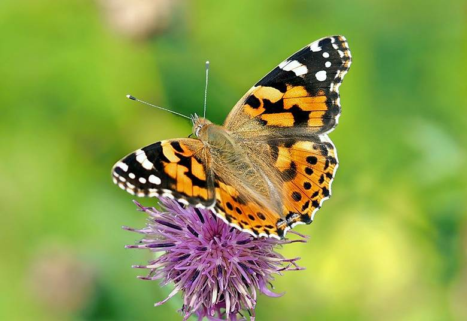
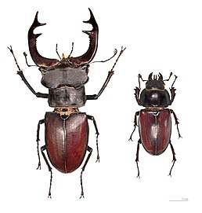
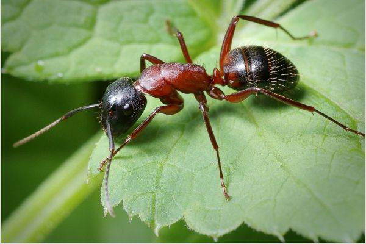
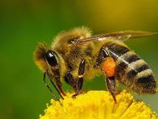

Метелики
Лускокри́лі, або метелики, молі (Lepidóptera) — ряд комах з повним метаморфозом. Виник, вірогідно, у середині мезозою, викопні рештки надійних представників ряду відомі з юрського періоду. Найбільш характерна особливість комах, які належать до цього ряду — це наявність густого покриву хітинових лусочок (сплощених волосків) на крилах (при цьому лусочки розташовані як на жилках, так і на криловій пластинці між ними). Для більшості видів має спеціалізований сисний ротовий апарат з хоботком, утвореним подовженими лопатями нижньої щелепи.
Розвиток з повним перетворенням: є стадії яйця, личинки (званої гусеницею), лялечки та імаго. Личинка червоподібна, характеризується недорозвиненими черевними ногами, потужно склеротізованними покривами голови, гризучим ротовим апаратом і парними залозами, виділення з яких, при контакті з повітрям, утворюють шовкову нитку.
Надзвичайна різноманітність форм метеликів є їхньою вражаючою особливістю. Лускокрилі — один із рядів комах, найчисленніших за кількістю видів. Представники ряду поширені на всіх континентах, за винятком Антарктиди. 55 видів лускокрилих занесено до Червоної книги України.
Наверх до спискуЖук-олень
Жук-о́лень, або рогач звичайний (Lucanus cervus) — вид жуків роду Рогач (Lucanus) з родини рогачевих (Lucanidae), найвідоміший її представник.
Він є найбільшим з твердокрилих фауни України, досягаючи, разом з «рогами», 7,5 см завдовжки. Живе в дуплах старих та мертвих дерев в лісах та лісопосадках. Лісове господарство, зменшуючи кількість старих та мертвих дерев в лісах, знищує також житла цих комах, як і багатьох інших ксилобіонтів. Колись жук-олень був звичайним видом по всій Європі, тепер же його популяція постійно зменшується. Вид відносять до тих, яким загрожує вимирання, в Україні його внесено до Червоної книги.
Наверх до спискуМураха
Мура́шки або мурахи (Formicidae) — родина комах з надродини мурашиних, інфраряду жалкі перетинчастокрилі ряду перетинчастокрилі. Є складними гуртосімейними комахами, що утворюють 3 касти: самки, самці і робочі особини. Самиці і самці крилаті, робочі особини — безкрилі. Вусики колінчасті, у самок і робочих особин 11–12-членикові, у самців 12–13-членикові, у низки видів 4-, 6- або 10-членикові. Основний членик вусика (скапус) зазвичай набагато довший за усіх інших. Задній відділ грудей (епінотум) є першим сегментом черевця, що злився із задньогрудьми. Власне черевце приєднується до епінотуму стебельцем, утвореним першим або другим сегментами. Мурахи деяких підродин (мирміцини, понерини та інших) мають розвинене жало. Крила зі скороченим жилкуванням.
Мурахи живуть великими сім'ями в кублах, звані мурашниками, які влаштовуються в ґрунті, деревині, під камінням; деякі споруджують мурашники з дрібних рослинних частинок тощо. Існують паразитичні види, які мешкають в гніздах інших мурах, мурахи-«рабовласниці», що утримують у своїх кублах «рабів» — мурах інших видів. Низка видів пристосувалася до проживання в оселях людини. Деякі види цінуються за регулювання чисельності комах-шкідників, інші можуть самі вважатися шкідниками. Також існують види, колонії котрих ведуть кочовий спосіб життя.
Наверх до спискуБджола
Бджо́ла (ст.-укр. бчола; Anthophila, або Apiformes) — секція в родині Apoidea літаючих комах ряду перетинчастокрилих (частина цієї надродини відноситься до суспільних комах), споріднена з осами і мурашками. Існує близько 20 тисяч видів бджіл. Їх можна виявити на всіх континентах, окрім Антарктиди. Бджоли пристосувалися харчуватися нектаром і пилком, використовуючи нектар головним чином як джерело енергії, а пилок для отримання білків та інших живильних речовин.